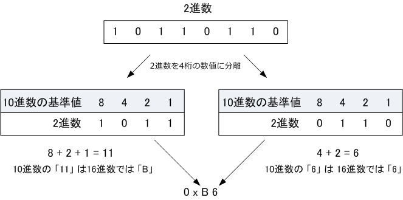
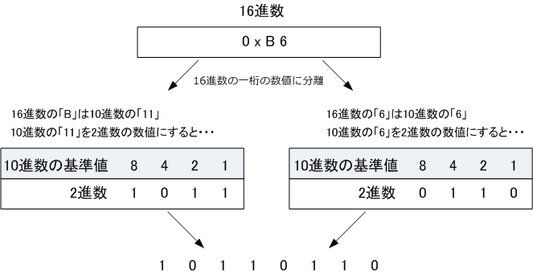
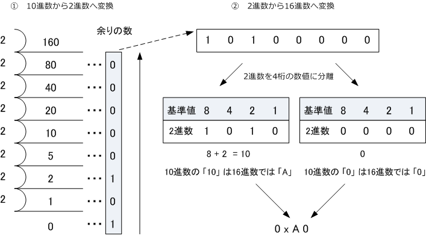
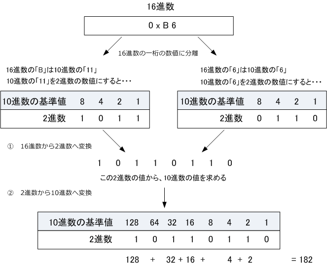

2進数 & 10進数 & 16進数 - Part 2
16進数について
10進数の基数は「10」、2進数の基数は「2」、そして16進数の基数は「16｣であることから、16進数では 16種類の数字が必要であることが分かります。記号としての数字は 「 0 ～ 9 」 の10種類しかないので、 16進数ではアルファベットの 「 A～F 」を数字として使用します。10進数は 「 9 」 の次に位が上がるか 16進数では 「 F 」 の次に位があがります。なお、10進数の数値と区別するために、16進数では数値の 先頭に「 0x 」をつけます。以下の対応表通り、例えば10進数の「 8 」は16進数では「 0x8 」となります。
| 10進数と16進数の対応表 | |||||||||||||||||
|---|---|---|---|---|---|---|---|---|---|---|---|---|---|---|---|---|---|
| 10進数 | 0 | 1 | 2 | 3 | 4 | 5 | 6 | 7 | 8 | 9 | 10 | 11 | 12 | 13 | 14 | 15 | 16 |
| 16進数 | 0 | 1 | 2 | 3 | 4 | 5 | 6 | 7 | 8 | 9 | A | B | C | D | E | F | 10 |
2進数から16進数への変換方法
2進数の数値を16進数の数値に変換するためには、3つのステップを踏む必要があります。16進数の1桁を 2進数では4桁で表すため、先ず、2進数の数値を4桁の数値に分離します。次に、分離した数から10進数の 値を求めます。最後にその10進数の値を16進数に変換します。その結果は以下の通りです。

以上のことから、2進数の数値「 10110110 」は16進数の数値に変換すると「 0xB6 」であると分かります。
16進数から2進数への変換方法
16進数の数値を2進数の数値に変換には上図と逆のことをします。16進数の1桁を2進数の4桁に変換します。 そして、その4桁の数値を並べるだけです。上図と同様で、16進数の数値からいきなり2進数の数値を求め られない場合、16進数の数値を一度10進数の数値に変換し、10進数の数値から2進数を求めるようにします。

以上のことから、16進数の数値「 0xB6 」は2進数の数値に変換すると「 10110110 」であると分かります。
10進数から16進数への変換方法
10進数の数値を16進数の数値に変換するためには、先ず、10進数の数値を2進数の数値に変換します。 次に、2進数の数値を16進数の数値に変換します。つまり、10進数から直接16進数に変換するのではなく 「 2進数への変換 」を経由します。ただし数値が小さい場合は直接変換した方が早いでしょう。ここでは 10進数の「160」の数値は、16進数では「0xA0」であると導きだしています。考え方は今までと同じです。

16進数から10進数への変換方法
16進数から10進数に変換する場合も、｢2進数への変換」を経由することで数値を算出します。ここでは、 16進数の「0xB6」の数値は、10進数では「182」であると導き出しています。考え方は今までと同じです。
